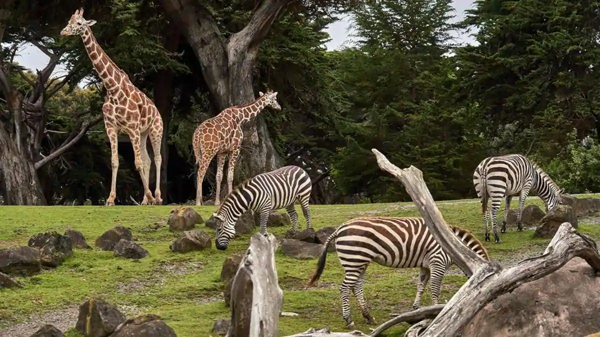
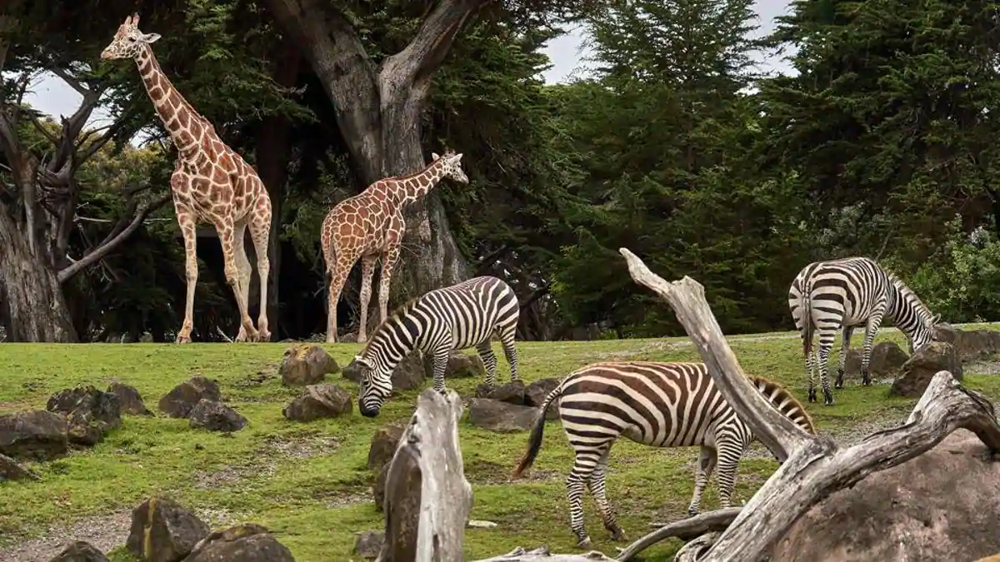
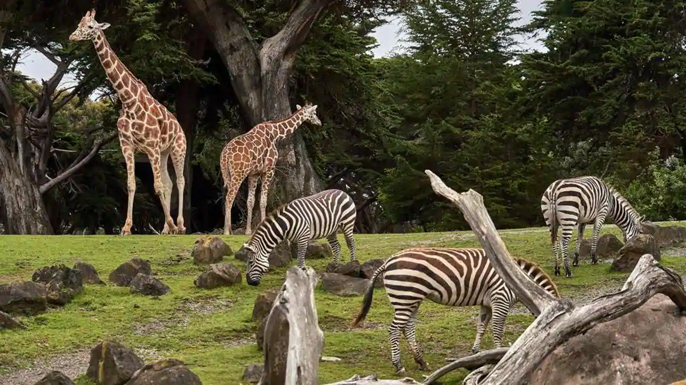

Major Attractions
 


The community became prominent under Raja Martanda Varma, who made it the capital of his kingdom of Travancore in 1745. The city’s former name, Trivandrum, was given by the British and is a contraction of Thiruvananthapuram, its ancient name that was adopted again in the early 21st century. Thiruvananthapuram’s industries include mineral processing, sugar milling, textiles, and handicrafts. Rice and coconut cultivation and coastal fishing are economically important. Thiruvananthapuram is a rail terminus and road hub and has an airport and a harbour. It is the site of the University of Kerala (1937) and its affiliated colleges and technical schools. It also has a museum, zoological gardens, an observatory, and an art gallery. A large fort contains several palaces and a temple dedicated to the Hindu god Vishnu, which is a noted pilgrimage centre. .
Thiruananthapuram, the jewel in the emerald necklace that Kerala is for the Indian sub-continent, must surely have Parasuramanbeen a “must see” destination for ages, long before National Geographic Traveller classified it as one. Surely long before Sage Parasurama , according to local legend, threw his divine battle axe from Kanyakumari to Gokarnam to west Kerala, God’s own land, from the Varuna the sea god; before the times of Mahabali the democratic and just ruler of this wonderful land who was sent down to the netherworld through deceit. It doesnt take any flights of fancy to imagine that this land fired the imaginations of intrepid travellers and explorers like Columbus, Vasco da Gama, Marco Polo, Fa Hien, and quite possibly, countless others from the pages of history, recorded or not
